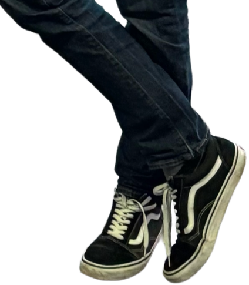

Hi, I’m Yaro - a data-driven problem solver with a background in consulting & IT. I have experience building and scaling tech products and specialize in analytics & SQL. Also, right now I’m learning how to code. Check out my personal web page!
In May 2024 I joined regional ops marketplace team in Amsterdam. Since January 2026 I'm part of EMEA launch & expansion team - we are launching Eats in 7 new countries.
In 2022 I moved to the Netherlands and joined Antler accelerator. Together with my co-founder we've built a browser extension for website feedback management.
This my first job in IT - I worked as a business development manager at computer vision startup. Our biggest clients were Pepsico, Tesla and Schlumberger.
My first corporate experience after university graduation was in consulting. It was a 6-month internship and all of my projects were in metals & mining industry.

The project I’m proud of the most is my startup - Not8. I was the CEO and was responsible for fundraising (we raised 250k EUR from Antler and Rabobank), sales, operations and defining product features. It was a super exciting experience.
I’m a tech enthusiast and an aspiring entrepreneur. Right now i’m learning HTML, CSS, Javascript & python, and planning to put my skills into action once i complete my courses on udemy. a couple of Fun facts about me: i love cars, mma, chess & sauna. I’m also fascinated by chinese language and lived in beijing for a year.